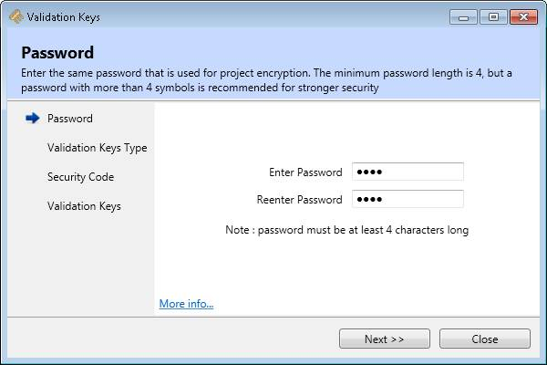
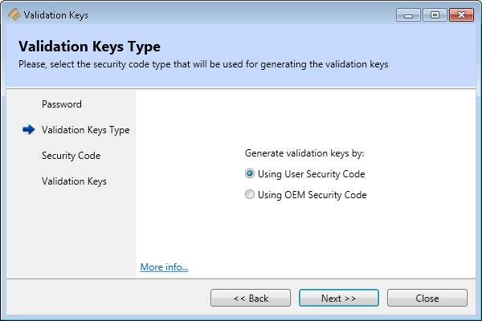
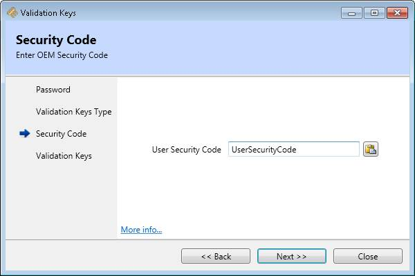
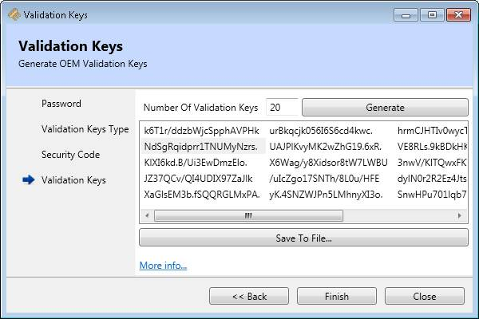

Validation keys are strings, that can be used in TrioBASIC programs to compare against the stored User Security Code or OEM Security Code, for security purposes. They have the same CRC as the generated Project Key, but are different strings.
The number of keys that need to be generated have to be specified.
The validation keys generation process involves 3 stages as follows:
The process starts with entering the same password, that is used for project encryption. When a project has been encrypted already and the project encryptor main window have not been yet closed, the last user password is remembered for user's convenience.

There are two options available:

When using User Security Code, the validation keys are derived from "Project Password" and a custom user-supplied User Security Code".
When using OEM Security Code, the validation keys are derived from "Project Password" and a custom OEM-supplied security code.
Depending on the user's choice for generation of validation keys, either a user security code, or an OEM security code must be entered in the text box. A Paste button is provided for convenience.

The number of validation keys to be generated must be specified. The keys are generated by pressing the “Generate” button. Keys can be copied to clipboard, via context menu command “Copy”. This command copies only the selected keys. If all keys are to be copied, first the context menu “Select all” must be executed( keyboard shortcut Ctrl+A ). Keys are stored in clipboard as text.
Keys can also be stored to a file on the disk, by pressing the “Save To File” button. This will display a standard save dialog, where the destination file can be specified.
